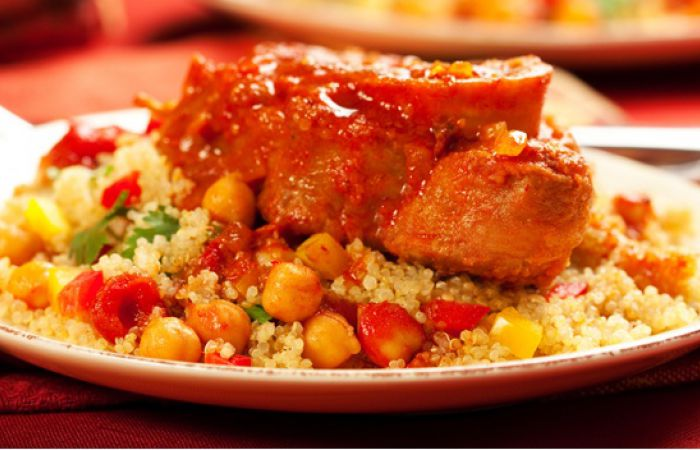
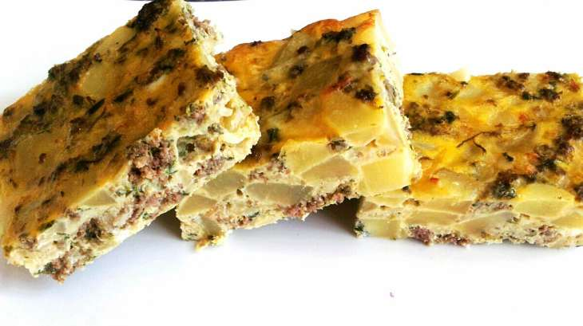
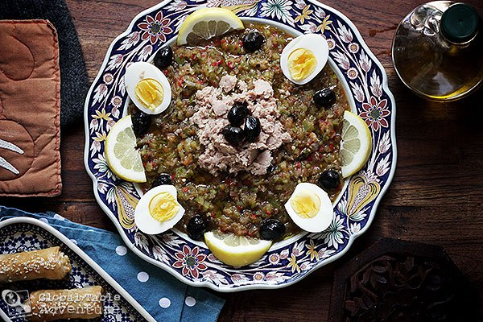

Les recettes
Couscous
Ingrédients (2 personnes)
500g de semoule moyenne
Du gigot de mouton ou de veau
1 oignon
des pommes de terre
des carottes
des piments
Tabel(épice tunisienne à base de coriandre
Piment rouge en poudre
huile d'olive
sel
poivre
Préparation
ÉTAPE 1 :
Émincer finement l'oignon, le faire revenir dans de l'huile d'olive dans le fond de la couscoussière ou d'une cocotte basique.
Une fois coloré, ajouter la viande coupée en morceaux.
Faire dorer, y ajouter deux grosses cuillère à soupe de concentré de tomate. Faire dessécher légèrement le concentré en ne cessant pas de remuer. Ajouter 4 verres d'eau.
ÉTAPE 2 :
Ajouter les légumes en prenant soin de couper les carottes dans le sens de la longueur, les pommes de terre en 4 (dans le sens de la longueur aussi), les piments.
ÉTAPE 3 :
Remuer le tout, recouvrir juste à hauteur d'eau, pas plus.
Ajouter les épices et remuer bien à nouveau.
Saler et poivrer à convenance.
ÉTAPE 4 :
Baisser le feu à moyen et laisser cuire jusqu'à ce que la viande se détache et que les légumes soient bien cuits.
Étape 5:
Commencer à préparer la semoule.
La mettre dans un grand plat, la mouiller de 2 grands verres d'huile d'olive, l'égrener à la fourchette ou à la main, jusqu'à ce qu'elle soit bien séparée. Ajouter du sel.
ÉTAPE 6 :
Mettre la semoule dans le haut de la couscoussière et faire cuire 30 min, en veillant à remuer de temps à autre.
ÉTAPE 7 :
Sortir la semoule et la mouiller avec de l'eau cette fois ci, bien mélanger pour que les grains ne collent pas.
ÉTAPE 8 :
En fin de cuisson de la semoule, ajouter de la sauce du couscous (sans légume) environ 2 louches et remuer bien. Cela va donner beaucoup de goût à la semoule et la rendre très tendre et parfumée.
ÉTAPE 9 :
Quand tout est bien cuit, dresser la semoule en rond en laissant un puits au milieu.
Y dresser la sauce en prenant soins de dresser les carottes en 'soleil' ainsi que les pommes de terre.
Éviter de détremper la semoule avec trop de sauce. Étant cuite à la vapeur elle est très tendre et n'a pas besoin de trop de sauce !
Étape 10
Dégustez !
Tajine
Ingrédients (6 personnes)
200g de fromage râpé
1 kg de pomme de terre
10 oeufs
1 botte de persil
sel
poivre
coriandre
huile d'olive
huile de friture
400g d'escalope de poulet
Préparation
ÉTAPE 1 :
faire frire les pommes de terre.
faire revenir le poulet avec seul, poivre et coriandre dans une poêle avec un peut d'huile d'olive et 50g de margarine
ÉTAPE 2 :
Dans un saladier, casser les oeufs, incorporer les pommes de terre froides et le poulet
mélanger le tout.
ÉTAPE 3 :
Mettre au four 15 minutes.
Préparer une petite salade pour accompagner le tout.
salade mechwiya
Ingrédients (4 personnes)
6 poivrons
2 piments verts
4 tomates
4 gousses d'ail
sel
1 c à c de coriandre moulu
1/2 cuillère de cavi
jus de citron
huile d'olive
thon
olives noires et vertes
1 oeuf dur
1 c à s de ciboulette hachée
2 c à s de sauce de soja
Préparation
ÉTAPE 1 :
Faites griller vos légumes sur le feu et les placer dans un sac en plastique
ÉTAPE 2 :
Épluchez les tomates, les piments et les poivrons.
ÉTAPE 3 :
Épépinez vos légumes, ensuite les égoutter dans une passoire au minimum une heure.
Étape 4
Mettre le tout dans un mixeur et faire hacher le tout. ( il ne faut pas les réduire en purée, juste les hacher grossièrement).
Étape 5
Ajoutez le sel, la coriandre, carvi, jus de citron, et laisser mariner au minimum 2 heures.
Étape 6
Mettre votre salade dans une assiète, et décorez avec les olives, les oeufs et le thon. assaisonner le tout avec de l'huile d'olive.